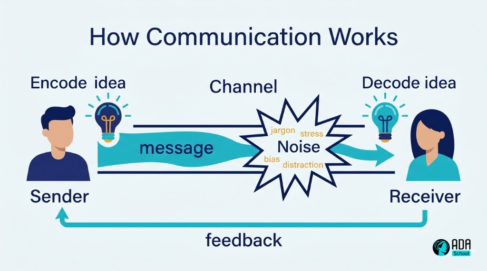
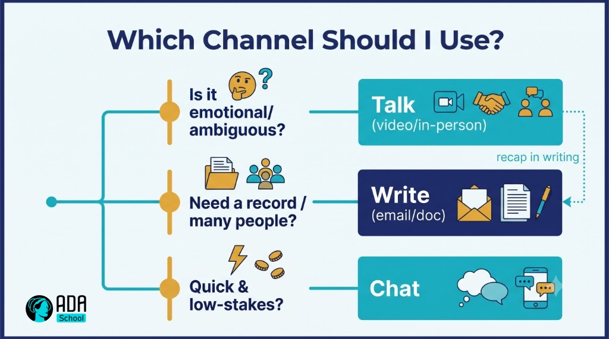
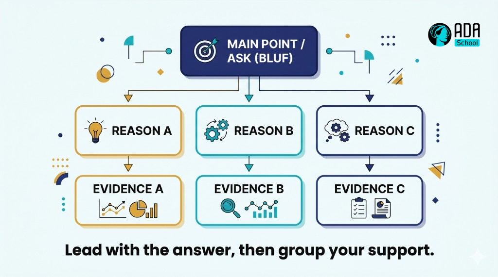
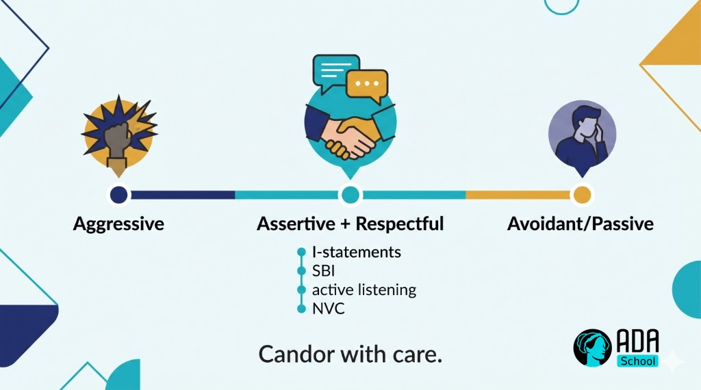

🗣️ Worked Example — Effective Communication Micro-Credential (full course)
A complete, ready-to-run ADA micro-credential for one of the most-requested workplace competencies: communicating effectively. It is a fully populated example built end-to-end with the ADA Methodology (KSA + 4 phases + learning-atom topology): every atom has real reading text, curated video links, Mermaid diagrams, image-generation prompts, role-plays, and rubrics.
🖥️ See it live: open course.html in any browser for an interactive, navigable version of this course (sidebar, progress, embedded videos, diagrams, copyable prompts).
This is a human-skill course that spans the full KSA spectrum: a small Knowledge base (how communication works, audience & channel), two core Skills (active listening, structuring clear messages), the Skill of navigating feedback / difficult conversations, and the durable Abilities that make it stick (empathy and assertive, respectful expression). It complements the Growth Mindset (a durable Ability) and Python Variables (a technical Skill) courses.
Conforms to ../../specs/micro-credential-v2-schema.md · modalities from ../../specs/learning-atom-topology.md · KSA from ../../specs/ksa-taxonomy.md.
🧭 What this teaches
Almost every job posting asks for "strong communication skills" — and almost no one defines what that means or how to train it. This course makes it concrete and certifiable: learners build a working model of how communication succeeds and fails, learn to listen actively, structure a clear message (in writing and out loud), and handle feedback and hard conversations with empathy and appropriate assertiveness — finishing with a real communication performance they deliver and peer-review.
| Title | Effective Communication: Listen, Structure & Connect |
| Duration | ~12 hours · 2–3 weeks |
| Primary KSA | 🛠️ Skill — listen actively and structure clear messages, plus the 🌱 Abilities that sustain them |
| Target competency | O*NET basic/social skills: Active Listening (2.A.1.b), Speaking (2.A.1.d), Writing (2.A.1.c), Social Perceptiveness (2.B.1.a) · ESCO transversal "communicate effectively", "use active listening" |
| Badge | 🏅 Effective Communicator |
| Prerequisites | None. A real context (team, class, project) to practice in helps. |
📚 Course contents
| # | File | What it is |
|---|---|---|
| — | micro-credential.md | The full micro-credential spec (YAML schema, objectives, KSA map, phase planner) |
| 1 | atoms/atom-1-how-communication-works.md | 🙉 P1 · 🧠 K — How communication works (the model, noise & barriers) |
| 2 | atoms/atom-2-audience-and-channel.md | 🙉 P1 · 🧠 K — Audience analysis & choosing the right channel |
| 3 | atoms/atom-3-active-listening.md | 🙈 P2 · 🛠️ S + 🌱 A — Active, empathetic listening (model + practice) |
| 4 | atoms/atom-4-structure-your-message.md | 🙊 P3 · 🛠️ S — Structure clear messages (BLUF · SBI · Pyramid) |
| 5 | atoms/atom-5-feedback-and-difficult-conversations.md | 🙊 P3 · 🛠️ S + 🌱 A — Feedback & difficult conversations (role-play) |
| 6 | atoms/atom-6-communication-capstone.md | 🐵 P4 · 🛠️ S + 🌱 A — Capstone: deliver, converse, reflect + peer review |
| — | capstone.md | Capstone brief + how it maps to KSA |
| — | rubrics.md | All rubrics (knowledge-mini, skill, behavioral, capstone-5) |
| — | skills-map.md | Badge → skills map and how it boosts almost every role |
🤝 Practiced with people: communication is a social skill — atoms use role-plays, peer review, and a live showcase, and the Abilities are assessed behaviorally across ≥3 occasions (never a quiz).
🔄 Phase journey
🤖 How it was authored (and how to reuse it)
This course follows the Gen AI authoring workflow in ../../specs/genai-authoring-workflow.md: competency → KSA → atoms → modalities → rubrics → badge. Conventions used throughout:
- 🎬 Videos are written as a
youtubeblock with the real URL + a caption (the interactive site
embeds them as a click-to-play player).
- 🖼️ Diagrams are provided two ways: a live Mermaid diagram and a reusable
image-generation prompt in a prompt block — feed it to any image model for an on-brand asset.
- ✅ Activities include scripts, checklists, and rubrics so the course is self-paced and practicable.
⚠️ Human-in-the-loop (methodology guardrail): the external links and references below are curated starting points. A mentor/instructor should verify each link, licensing, and currency before delivery — AI-suggested sources are never authoritative on their own. Abilities here require human/peer observation across occasions. See ../../CLAUDE.md §5.🎓 Micro-Credential — Effective Communication: Listen, Structure & Connect
The full specification for this micro-credential. It conforms to ../../specs/micro-credential-v2-schema.md.
YAML front matter
yamlschema: ada-microcredential/v2
id: mc-effective-communication
title: "Effective Communication: Listen, Structure & Connect"
language: en
duration_hours: 12
level: beginner
status: published
license: CC-BY-SA-4.0
mentors: ["@sancarbar"]
target_roles:
- role: "Any role — communication is a transversal, near-universal job requirement (ICs, leads, client-facing, technical)"
framework_ref: >
O*NET basic skills: 2.A.1.b Active Listening, 2.A.1.d Speaking, 2.A.1.c Writing ·
O*NET social skills: 2.B.1.a Social Perceptiveness, 2.B.1.e Persuasion ·
ESCO transversal: "communicate effectively", "use active listening techniques"
ksa:
- { id: K-comm-model, type: knowledge, label: "How communication works: sender→message→channel→receiver→feedback; noise & barriers", target_level: 2, bloom: understand }
- { id: K-audience-channel, type: knowledge, label: "Audience analysis and channel selection (sync/async, media richness)", target_level: 2, bloom: understand }
- { id: S-active-listening, type: skill, label: "Listen actively: attend, paraphrase, ask clarifying questions, check understanding", target_level: 2, bloom: apply, primary: true }
- { id: S-structure-message, type: skill, label: "Structure a clear message (BLUF, SBI, Pyramid Principle) in writing and speech", target_level: 2, bloom: apply, primary: true }
- { id: S-feedback-difficult, type: skill, label: "Give/receive feedback and navigate difficult conversations (SBI + nonviolent communication)", target_level: 2, bloom: apply }
- { id: A-empathy, type: ability, label: "Empathy & audience-awareness: read the other person and adapt", target_level: 2, affective_stage: value, assessed_occasions: 3 }
- { id: A-assertiveness, type: ability, label: "Assertive, respectful expression under pressure (clear, calm, honest)", target_level: 2, affective_stage: respond, assessed_occasions: 3 }
atoms:
- { id: atom-1, title: "How communication works", ksa_refs: [K-comm-model], phase: 1, modalities: [{dimension: read, subtype: Article}, {dimension: watch, subtype: Video Explainer}, {dimension: see, subtype: Diagram}, {dimension: evaluate, subtype: Pop Quiz}], rubric: knowledge-mini }
- { id: atom-2, title: "Audience & channel", ksa_refs: [K-audience-channel], phase: 1, modalities: [{dimension: read, subtype: Article}, {dimension: see, subtype: Framework}, {dimension: practice, subtype: Worksheet / Exercise}, {dimension: evaluate, subtype: Pop Quiz}], rubric: knowledge-mini }
- { id: atom-3, title: "Active listening", ksa_refs: [S-active-listening, A-empathy], phase: 2, modalities: [{dimension: watch, subtype: Video Explainer}, {dimension: see, subtype: Mental Model}, {dimension: practice, subtype: Role-Play}, {dimension: collaborate, subtype: Pair Programming}, {dimension: evaluate, subtype: Mini-Rubric}], rubric: skill }
- { id: atom-4, title: "Structure your message (BLUF · SBI · Pyramid)", ksa_refs: [S-structure-message], phase: 3, modalities: [{dimension: read, subtype: Technical Article}, {dimension: practice, subtype: Worksheet / Exercise}, {dimension: practice, subtype: AI Prompt Question}, {dimension: evaluate, subtype: Performance Task}], rubric: skill }
- { id: atom-5, title: "Feedback & difficult conversations", ksa_refs: [S-feedback-difficult, A-assertiveness, A-empathy], phase: 3, modalities: [{dimension: read, subtype: Case Study}, {dimension: practice, subtype: Role-Play}, {dimension: practice, subtype: Simulation}, {dimension: evaluate, subtype: Behavioral Assessment}], rubric: behavioral }
- { id: atom-6, title: "Communication capstone + peer review", ksa_refs: [S-active-listening, S-structure-message, S-feedback-difficult, A-empathy, A-assertiveness], phase: 4, modalities: [{dimension: practice, subtype: Performance Task}, {dimension: collaborate, subtype: Showcase / Demo Day}, {dimension: collaborate, subtype: Async Peer Review}, {dimension: evaluate, subtype: Capstone Project}], rubric: capstone-5 }
capstone:
title: "Deliver a clear message and lead a real conversation, then reflect"
integrates_ksa: [K-comm-model, K-audience-channel, S-active-listening, S-structure-message, S-feedback-difficult, A-empathy, A-assertiveness]
rubric: capstone-5
badge:
name: "Effective Communicator"
evidence_required: ["atom-3", "atom-4", "atom-5", "capstone"]
issued_on: verified-evidence
🎯 Target job competency
Communicate effectively at work: listen so people feel heard, say/write things so people understand and act, and handle feedback and tension without damaging the relationship. It is the single most common line in job postings — "excellent communication skills", "stakeholder communication", "active listening", "clear written communication". Mapped to O*NET basic skills (Active Listening, Speaking, Writing) and social skills (Social Perceptiveness, Persuasion), and ESCO transversal communication skills.
🧬 KSA breakdown — a human skill, taught the right way
| KSA | Component | Why this type | Target |
|---|---|---|---|
| 🧠 Knowledge | How communication works (model, noise) | A small mental model that explains why messages fail | L2 |
| 🧠 Knowledge | Audience & channel | Prevents the "right message, wrong channel/audience" failure | L2 |
| 🛠️ Skill | Active listening | A trainable technique (paraphrase, clarify, check) | L2 |
| 🛠️ Skill | Structure a clear message | BLUF/SBI/Pyramid — practiced in writing & speech | L2 |
| 🛠️ Skill | Feedback & difficult conversations | A procedure for high-stakes moments | L2 |
| 🌱 Ability | Empathy & audience-awareness | A disposition shown across situations, over time | L2 |
| 🌱 Ability | Assertiveness (respectful) | Calm, honest expression under pressure — a habit | L2 |
Why this shape: communication is mostly doing (Skills), but it only transfers when paired with the Abilities that drive it — empathy (to adapt to the other person) and assertiveness (to say the hard thing kindly). Hence the Abilities are assessed behaviorally, across ≥3 occasions, not with a quiz.
📘 Learning objectives (Bloom + KSA)
| Objective | Bloom | KSA | Component | Target |
|---|---|---|---|---|
| Explain the communication model and name common barriers (noise) | Understand | 🧠 K | K-comm-model | L2 |
| Analyze an audience and choose an appropriate channel | Understand/Analyze | 🧠 K | K-audience-channel | L2 |
| Listen actively: paraphrase, ask clarifying questions, check understanding | Apply | 🛠️ S | S-active-listening | L2 |
| Structure a clear message with BLUF/SBI/Pyramid (written & spoken) | Apply | 🛠️ S | S-structure-message | L2 |
| Give and receive feedback and de-escalate a difficult conversation | Apply | 🛠️ S | S-feedback-difficult | L2 |
| Adapt to the listener with empathy across multiple situations | Value (affective) | 🌱 A | A-empathy | L2 |
| Express needs assertively and respectfully under pressure | Respond (affective) | 🌱 A | A-assertiveness | L2 |
🔍 Phase planner
| Phase | Atom(s) | KSA focus | Activity | Assessment |
|---|---|---|---|---|
| 🙉 1 · hear | Atom 1, 2 | 🧠 K | reading + video + the comm model; audience/channel worksheet | knowledge-mini (pop quizzes) |
| 🙈 2 · see | Atom 3 | 🛠️ S + 🌱 A | model active listening; paired listening practice | skill mini-rubric |
| 🙊 3 · do | Atom 4, 5 | 🛠️ S + 🌱 A | structure messages; feedback & difficult-conversation role-plays | performance task + behavioral assessment |
| 🐵 4 · share | Atom 6 (capstone) | 🛠️ S + 🌱 A | deliver a message + lead a conversation; showcase + peer review | capstone-5 |
🚀 Capstone & 📊 assessment
Full brief in capstone.md; all rubrics in rubrics.md. In short: formative pop quizzes for the Knowledge atoms, a skill mini-rubric + performance task for listening and message structure, a behavioral assessment across occasions for the Abilities, and a live communication performance graded on the standard 5-criteria capstone rubric. The badge → skills-map mapping is in skills-map.md.
🎓 Outcomes & recognition
- A working model of how communication succeeds and fails (no more "they just didn't get it").
- Two job-ready moves: active listening and structuring a clear message (written & spoken).
- A repeatable approach to feedback and difficult conversations.
- The durable empathy and assertiveness that make communication land — evidenced over time.
- A portfolio artifact: a recorded/observed communication performance + reflection.
- LinkedIn-compatible digital badge: 🏅 Effective Communicator — a multiplier on almost any role.
⚛ Learning Atom 1 — How Communication Works
Phase: 🙉 1 · Self-Guided Introduction (hear) · KSA: 🧠 Knowledge · Target level: L2 · Component id: K-comm-model
🎯 Learning objective
- Explain the communication process model and name the common barriers ("noise") that make
messages fail.
🧩 Prerequisites
- None. Just situations where you've been misunderstood — we'll explain why.
🧭 Atom description
"Strong communication" sounds vague until you see the mechanism. This atom gives you a simple model of how a message travels from one mind to another, and where it breaks. Once you can name the failure points, you can fix them deliberately — that's the whole rest of the course.
📖 Reading — A message is a relay, not a transfer (≈ 6 min)
We like to think communication is transferring an idea from our head to someone else's. It isn't. You encode an idea into words/tone/body language; it travels through a channel; the other person decodes it through their own experience, mood, and assumptions. What they reconstruct is never exactly what you meant — the question is how close you can get.
The classic sender → message → channel → receiver → feedback model (Shannon–Weaver, extended by Schramm) adds two crucial ideas:
- Noise — anything that distorts the message: literal noise, jargon, vague words, a bad channel,
stress, bias, distraction, cultural difference, or unstated assumptions.
- Feedback — the receiver's response that tells you whether it landed. Communication without
feedback is just broadcasting; you don't actually know if you communicated.
A few consequences worth internalizing:
- Meaning lives in the receiver, not the message. "But I said it clearly" is irrelevant if they
didn't reconstruct your meaning. Effectiveness is measured at their end.
- Most conflict is decoding error, not disagreement. People often agree but think they disagree
because words carried different meanings.
- You can only manage noise you can name. That's why the next atoms target specific sources:
wrong channel/audience (Atom 2), not listening (Atom 3), unstructured messages (Atom 4), and emotional noise in hard conversations (Atom 5).
A handy distinction: verbal (the words), paraverbal (tone, pace, volume), and nonverbal (face, posture, gesture). When they conflict, people believe the nonverbal/paraverbal — so "I'm fine" in a flat tone reads as not fine.
Key takeaways
- Communication is encode → channel → decode → feedback, not a clean transfer.
- Noise is anything that distorts the message; feedback confirms it landed.
- Meaning is reconstructed by the receiver — effectiveness is judged at their end.
- Verbal, paraverbal, and nonverbal must align or the nonverbal wins.
🎬 Watch — Communication, clearly explained (pick one, ~5–12 min)
🖼️ See — the communication model with noise

🖼️ Generated image — produced from the prompt below.
A reusable prompt to generate an on-brand version of this diagram:
Create a clean, modern educational infographic titled "How Communication Works". Show a Sender
encoding an idea (lightbulb), an arrow labeled "message" passing through a Channel, into a Receiver
decoding the idea, with a return arrow labeled "feedback". Add a "Noise" burst (jargon, stress, bias,
distraction) distorting the channel. Use ADA brand colors (Indigo #1E2A6E, Turquoise #15B5C6, Gold
#E0A53C accents) on a light background, flat vector style, legible sans-serif, no photoreal faces. 16:9.✅ Evaluate — Pop quiz (formative, knowledge-mini)
- Where does the meaning of a message ultimately live — in the message or the receiver?
- Give two examples of "noise" that are not literal sound.
- What turns "broadcasting" into actual communication?
Answer key
- In the receiver, who decodes it through their own context — so effectiveness is judged there.
- Any two: jargon, vague wording, stress, bias, distraction, wrong channel, cultural difference,
unstated assumptions.
- Feedback — checking that the message was reconstructed as intended.
📦 Deliverable
- Recall a recent miscommunication. In 4–6 sentences, locate the noise (which source?) and the
missing/late feedback, and name one change that would have prevented it.
🧠 Final reflection
- When your verbal and nonverbal signals last disagreed, which did people believe? What does that tell
you about where to put attention?
🔗 Sources to verify (human-in-the-loop)
- Shannon & Weaver, A Mathematical Theory of Communication (the source model).
- Schramm, The Process and Effects of Mass Communication (shared field of experience).
- Mehrabian, Silent Messages (verbal/paraverbal/nonverbal — note the often-misquoted "7%" rule).
🧩 Connections
- Successors: Atom 2 (audience & channel — managing two big noise sources), Atom 3 (listening).
⚛ Learning Atom 2 — Audience & Channel
Phase: 🙉 1 · Self-Guided Introduction (hear) · KSA: 🧠 Knowledge · Target level: L2 · Component id: K-audience-channel
🎯 Learning objective
- Analyze an audience and choose an appropriate channel for a given message.
🧩 Prerequisites
- Atom 1 (the communication model) — channel and audience are two of the biggest noise sources.
🧭 Atom description
The same words can succeed or fail depending on who hears them and how they're delivered. A great message sent on the wrong channel (a complex decision buried in a chat message; bad news by email) is a failed message. This atom gives you two quick analyses to run before you communicate anything that matters.
📖 Reading — Right message, right person, right pipe (≈ 7 min)
1) Analyze the audience. Before composing, answer four questions:
- Who are they (role, seniority, relationship to you)?
- What do they already know (so you don't over- or under-explain)?
- What do they care about (their goals, pressures, "what's in it for them")?
- **What do you want them to do** after (the call to action)?
Adapt vocabulary, level of detail, and framing to the answers. An exec wants the decision and the "so what"; a teammate wants the how; a customer wants the benefit and reassurance.
**2) Choose the channel by media richness.** Channels differ in how much nuance they carry:
| Richness | Channel | Best for |
|---|---|---|
| 🔴 Richest | In-person / video call | emotion, conflict, negotiation, ambiguity, relationship building |
| 🟠 Rich | Phone / voice | quick nuance, tone matters, back-and-forth |
| 🟡 Lean | Chat / DM | quick coordination, simple questions, low stakes |
| 🟢 Leaner | records, async detail, non-urgent, multiple recipients | |
| 🔵 Leanest | Doc / announcement | one-to-many reference, durable information |
Rules of thumb
- Match richness to stakes/ambiguity. Emotional or ambiguous → richer (talk). Simple/record-worthy
→ leaner (write). Hard feedback over chat is the classic mismatch.
- Sync vs. async. Synchronous (call/meeting) for fast convergence and rapport; asynchronous
(email/doc) to respect time, allow thinking, and create a record. Don't call a meeting an email could do — or email a decision a 5-minute call would settle.
- Follow rich with lean. After an important conversation, send a short written recap so the
decisions persist and everyone decodes the same thing.
Key takeaways
- Run the 4-question audience analysis (who · know · care · do) before composing.
- Match channel richness to the message's stakes and ambiguity.
- Talk for emotion/ambiguity; write for records/detail/many recipients.
- Recap rich conversations in writing so meaning persists.
🖼️ See — choosing a channel

🖼️ Generated image — produced from the prompt below.
A reusable prompt to generate an on-brand version:
Create a clean, modern decision-tree infographic titled "Which Channel Should I Use?". Branch from
"Is it emotional/ambiguous?" to "Talk (video/in-person)", from "Need a record / many people?" to
"Write (email/doc)", and "Quick & low-stakes?" to "Chat". Include a small dotted arrow "recap in
writing" from Talk to Write. Use ADA brand colors (Indigo #1E2A6E, Turquoise #15B5C6, Gold #E0A53C),
light background, flat vector, legible sans-serif. 16:9.🧪 Practice — Audience & channel worksheet
For each scenario, write the audience analysis (who/know/care/do) and the channel you'd pick, with one sentence of reasoning:
- You must tell a teammate their part of the project slipped the deadline.
- You're announcing a new process to 40 people.
- You need a quick yes/no on a meeting time.
- You're proposing a budget to a busy executive.
Sample key
- Talk (video/in-person) — sensitive, relational; recap in writing after.
- Write (doc/announcement) — one-to-many, durable reference; offer a Q&A channel.
- Chat — quick, low-stakes.
- Write a one-page BLUF memo (exec cares about decision + impact) → then a short meeting if
needed. (You'll build that message in Atom 4.)
✅ Evaluate — Pop quiz (formative, knowledge-mini)
- Which channel for delivering difficult, emotional news — and why?
- What are the four audience-analysis questions?
- Why send a written recap after an important meeting?
Answer key
- A rich channel (in-person/video/call): emotion and ambiguity need tone, nuance, and immediate
feedback.
- Who they are · what they know · what they care about · what you want them to do.
- So decisions persist and everyone decodes the same meaning (reduces later noise).
📦 Deliverable
- Your completed worksheet for the 4 scenarios (audience analysis + channel + reasoning).
🧠 Final reflection
- What's your default channel? Where does that default cost you (e.g., chatting things that deserve
a call)?
🔗 Sources to verify (human-in-the-loop)
- Daft & Lengel, Media Richness Theory.
- Minto, The Pyramid Principle (audience-first structuring — preview of Atom 4).
🧩 Connections
- Predecessor: Atom 1. Successors: Atom 3 (listen to the audience), Atom 4 (structure for them).
⚛ Learning Atom 3 — Active Listening
Phase: 🙈 2 · Visual Exploration (see) · KSA: 🛠️ Skill + 🌱 Ability · Target level: L2 · Component ids: S-active-listening, A-empathy
🎯 Learning objective
- Listen actively — attend fully, paraphrase, ask clarifying questions, and check understanding —
while showing empathy for the speaker.
🧩 Prerequisites
- Atoms 1–2. A partner (or a willing colleague/friend) for the practice.
🧭 Atom description
Most people think communication is about talking. The highest-leverage skill is the opposite: listening so well the other person feels understood. This atom is in Phase 2 (see) because you learn listening best by watching it modeled and then doing it in a low-stakes pair. It builds a Skill (a technique) and an Ability (empathy) at once.
🎬 Watch — what great listening looks like (~5–10 min)
📖 Reading — Listening is a skill you perform (≈ 6 min)
There are levels of listening: ignoring → pretending → selective → attentive → empathetic. Most workplace listening stalls at "selective" (waiting to talk, half-listening). Active listening is a deliberate performance with observable moves:
- Attend. Put the phone away, face them, make eye contact, leave a beat of silence. Your body says
"you have my attention" before any word.
- Paraphrase / reflect. Say back the content in your words: *"So the deadline moved and now the
test plan is at risk — is that right?"* This proves you decoded correctly and lets them correct you.
- Name the feeling (empathy). Reflect the emotion, tentatively: "Sounds frustrating." Naming
emotion lowers it and signals you see the person, not just the task.
- Ask open, clarifying questions. Prefer "what" and "how" over "why" (why feels accusatory).
"What would make this easier?" beats "Why didn't you flag it?"
- Don't fix yet. Resist jumping to solutions. People first need to feel heard; advice given too
early reads as dismissal.
- Check understanding. Summarize and confirm before moving on or responding.
Two anti-patterns to kill: the autobiographical hijack ("Oh that happened to me too, when I…") and solution-first (fixing before understanding). Both move the spotlight off the speaker.
Empathy vs. agreement. Reflecting a feeling ("that sounds stressful") is not agreeing or conceding — it's acknowledging their experience. You can empathize and still disagree.
Key takeaways
- Active listening is observable: attend · paraphrase · name feeling · ask open Qs · check.
- Paraphrasing proves (and corrects) your decoding — the core move.
- Name the emotion to show empathy; it lowers the temperature.
- Don't fix first. Understand, then (if wanted) help.
🖼️ See — the active-listening loop
🧪 Practice — Paired listening drill (Role-Play + Pair)
In pairs, 12–15 minutes total:
- Speaker (3 min): talk about a real (mild) frustration or a project decision.
- Listener: use only active-listening moves — no advice. Paraphrase, name the feeling, ask
open questions, check understanding.
- Swap. Then debrief 2 min: "When did you feel most understood?"
Solo option: watch a 5-min interview, pause, and write the paraphrase + feeling-name + one open question you'd offer.
✅ Evaluate — Skill mini-rubric (skill) + first behavioral occasion
Self/peer-score the drill:
| Criterion | Excellent (3) | Adequate (2) | Needs work (1) |
|---|---|---|---|
| Attending | Full attention, no interrupting | Mostly attentive | Distracted / interrupts |
| Paraphrasing | Accurate, in own words; invites correction | Some reflecting | Repeats verbatim or none |
| Empathy (🌱) | Names feeling; speaker felt understood | Some acknowledgment | Jumps to self/solution |
| Questions | Open, clarifying, non-leading | Mix | Closed/leading only |
Pass = 2+ each. This is occasion 1 of 3 for the Ability A-empathy (also observed in Atoms 5–6).
📦 Deliverable
- A short note from your partner (or self-reflection) on when they felt most understood, plus the
filled mini-rubric.
🧠 Final reflection
- Which move is hardest for you — staying silent, paraphrasing, or not fixing? Pick one to practice
this week.
🔗 Sources to verify (human-in-the-loop)
- Covey, The 7 Habits — Habit 5, "Seek first to understand."
- Rogers & Farson, Active Listening (1957).
- Headlee, We Need to Talk.
🧩 Connections
- Predecessor: Atom 2. Successors: Atom 4 (now structure what you say), Atom 5 (listening
under pressure).
⚛ Learning Atom 4 — Structure Your Message (BLUF · SBI · Pyramid)
Phase: 🙊 3 · Applied Practice (do) · KSA: 🛠️ Skill · Target level: L2 · Component id: S-structure-message
🎯 Learning objective
- Structure a clear message — in writing and out loud — using BLUF, SBI, and the
Pyramid Principle.
🧩 Prerequisites
- Atom 2 (audience analysis) — structure serves the audience.
🧭 Atom description
Clarity isn't a personality trait; it's a structure. Three reusable frameworks cover most workplace messages: lead with the point (BLUF), give specific behavioral feedback (SBI), and organize support top-down (Pyramid). This atom turns "I'll just wing the email/update" into a fast, repeatable move.
📖 Reading — Three structures that make you clear (≈ 8 min)
1) BLUF — Bottom Line Up Front. Put the conclusion / ask / decision in the first sentence, then support it. Readers are busy and skim; burying the point in paragraph three guarantees it's missed. Compare:
- 👎 *"Following up on yesterday's discussion, there were several considerations, and after looking
into the vendor options and timelines… [200 words] …so we should probably go with Option B."*
- 👍 "Recommendation: choose Option B (ships 2 weeks sooner, same cost). Details below."
2) The Pyramid Principle (Minto). Structure any explanation top-down: answer/main point → grouped supporting arguments → evidence. Each level summarizes the one below. It's BLUF applied recursively, and it's how you turn a messy brain-dump into a logical flow. Use signposting: "There are three reasons… First… Second… Third…"
3) SBI — Situation · Behavior · Impact (for feedback or describing an issue). Keep it specific and non-judgmental:
- Situation: when/where — "In this morning's standup…"
- Behavior: the observable action (not character) — *"…you cut off Maria twice before she
finished."*
- Impact: the effect — "…so we lost her point and she went quiet for the rest of the meeting."
SBI keeps feedback about behavior, not labels ("you're rude"), which is what makes it hearable. (You'll use SBI live in Atom 5.)
General clarity habits: one idea per sentence; concrete words over abstractions; cut filler and hedging; define jargon or drop it; end with a clear call to action ("Can you confirm by Friday?"). For spoken messages: state the headline, preview the structure ("two things"), then deliver.
Key takeaways
- BLUF: lead with the point/ask; support after.
- Pyramid: main point → grouped reasons → evidence; signpost the structure.
- SBI: Situation → Behavior (observable) → Impact — for issues/feedback.
- Always end with a clear call to action.
🖼️ See — the pyramid

🖼️ Generated image — produced from the prompt below.
A reusable prompt to generate an on-brand version:
Create a clean, modern infographic of the "Pyramid Principle" for communication: a top box "Main
point / ask (BLUF)" connected down to three "Reason" boxes, each connected to an "Evidence" box.
Caption: "Lead with the answer, then group your support." Use ADA brand colors (Indigo #1E2A6E,
Turquoise #15B5C6, Gold #E0A53C), light background, flat vector, legible sans-serif. 16:9.🧪 Practice — Rewrite for clarity (Worksheet + AI Prompt Question)
- BLUF rewrite. Take a rambling update (yours or this one) and rewrite it so the **first
sentence** carries the point; trim 30% of the words.
- Pyramid a recommendation. Pick a small decision and structure it: main point → 3 reasons →
evidence. Write it as a 5–6 line message.
- SBI draft. Write one piece of feedback in strict SBI (situation, behavior, impact) — you'll
deliver it in Atom 5.
- AI Prompt Question. Ask an AI: *"Rewrite this message using BLUF and the Pyramid Principle, and
point out where I buried the lead."* Critique its output — did it actually lead with the point?
✅ Evaluate — Performance task (skill)
Submit your BLUF rewrite + pyramid recommendation. Scored on:
| Criterion | Excellent (3) | Adequate (2) | Needs work (1) |
|---|---|---|---|
| Lead with the point | Point/ask in sentence 1 | Point early | Buried |
| Logical structure | Clear pyramid; signposted | Mostly ordered | Rambling |
| Concision & clarity | Tight, concrete, jargon-managed | Some filler | Wordy/vague |
| Call to action | Specific & clear | Present | Missing |
Pass = 2+ each → L2 evidence for S-structure-message.
📦 Deliverable
- Your rewritten BLUF message, your pyramid recommendation, and your SBI feedback draft.
🧠 Final reflection
- Where do you tend to bury the lead — emails, updates, or asks? What's the cost when you do?
🔗 Sources to verify (human-in-the-loop)
- Minto, The Pyramid Principle.
- Center for Creative Leadership — SBI feedback model.
- US Army / general business usage — BLUF.
🧩 Connections
- Predecessor: Atom 3. Successor: Atom 5 (deliver SBI feedback live, under pressure).
⚛ Learning Atom 5 — Feedback & Difficult Conversations
Phase: 🙊 3 · Applied Practice (do) · KSA: 🛠️ Skill + 🌱 Ability · Target level: L2 · Component ids: S-feedback-difficult, A-assertiveness, A-empathy
🎯 Learning objective
- Give and receive feedback and de-escalate a difficult conversation, expressing your view
assertively and respectfully.
🧩 Prerequisites
- Atom 3 (active listening) and Atom 4 (SBI). This is where they combine under pressure.
🧭 Atom description
This is the highest-stakes communication moment: telling someone something they may not want to hear, or staying composed when you're on the receiving end. It fuses everything so far — listen (Atom 3), structure with SBI (Atom 4), pick a rich channel (Atom 2) — and adds the Abilities of empathy and assertiveness. It's practiced through role-play because you can't learn this from reading alone.
📖 Reading — Candor with care (≈ 8 min)
Two failure modes bracket difficult conversations: aggression (blunt, blaming — wins the point, loses the person) and avoidance (sugarcoating or silence — keeps the peace, loses the truth). Assertiveness is the middle: say the honest thing and protect the relationship.
A reliable structure for giving feedback:
- Ask permission / set context. "Can I share something about this morning?" Invites, not ambushes.
- SBI. Situation → observable Behavior → Impact (from Atom 4). Stay on behavior, not character.
- Pause & listen. Hand them the mic; use active listening (Atom 3). Their view may change yours.
- Move forward together. Agree a concrete next step. "What would help?"
Tools that lower the temperature:
- "I" statements over "you" accusations: "I felt blocked when the update was late" vs. *"You
never update me."* "I" statements own your experience and are far harder to argue with.
- Nonviolent Communication (NVC): Observation → Feeling → Need → Request. *"When the deadline
moved without a heads-up (observation), I felt anxious (feeling) because I need predictability to plan (need). Could we agree to flag slips within a day? (request)."*
- Separate the person from the problem. Attack the issue side by side, not each other.
- Regulate first. If you're flooded (heart pounding), name it and take a beat — *"I want to get
this right; can we take five?"* You cannot listen or be precise while flooded.
Receiving feedback is also a skill: listen without defending, paraphrase to confirm you got it, ask for specifics, thank them, then decide what to act on. Treat it as data, not a verdict.
Empathy + assertiveness are not opposites. The goal is "I respect you enough to be honest, and I care enough to be kind." Reflect their view (empathy) and hold your own (assertiveness).
Key takeaways
- Aim for the middle: assertive (honest) + respectful (kind) — not aggressive or avoidant.
- Give feedback with permission → SBI → listen → next step.
- Use "I" statements and NVC (observation/feeling/need/request) to de-escalate.
- Regulate yourself first; receive feedback as data, not a verdict.
🖼️ See — the assertiveness middle path

🖼️ Generated image — produced from the prompt below.
A reusable prompt to generate an on-brand version:
Create a clean, modern infographic showing a spectrum with three points: "Aggressive" (left),
"Assertive + Respectful" (center, highlighted), "Avoidant/Passive" (right). Below the center, list
tools: "I-statements, SBI, active listening, NVC". Caption: "Candor with care." Use ADA brand colors
(Indigo #1E2A6E, Turquoise #15B5C6, Gold #E0A53C), light background, flat vector, legible
sans-serif. 16:9.🧪 Practice — Difficult-conversation role-plays (Role-Play + Simulation)
In trios (speaker · receiver · observer), run three 6–8 min scenarios so each person plays each role at least once:
- Give feedback: a teammate keeps missing handoffs (deliver your SBI draft from Atom 4).
- Receive feedback: your "manager" says your updates are too vague — practice receiving well.
- De-escalate: a "stakeholder" is upset about a delay — acknowledge, use NVC, agree a next step.
The observer scores against the rubric and gives SBI feedback afterward (meta-practice!).
✅ Evaluate — Behavioral assessment (behavioral)
Scored by the observer across the role-plays — this is a key occasion for the Abilities:
| Criterion | Excellent (3) | Adequate (2) | Needs work (1) |
|---|---|---|---|
| Assertiveness (🌱) | Honest and clear; holds position calmly | Mostly clear | Aggressive or avoidant |
| Empathy (🌱) | Acknowledges feeling/need; person feels respected | Some acknowledgment | Dismissive |
| Structure (🛠️) | Clean SBI / "I" statements / NVC | Partial | Blame/labels |
| Listening (🛠️) | Paraphrases, asks, adjusts | Some | Talks over |
| Repair | Lands a concrete next step | Vague step | None |
Pass = 2+ each. This is occasion 2 of 3 forA-empathyandA-assertiveness(capstone is the 3rd).
📦 Deliverable
- The observer's completed rubric for your role-plays + a 3–4 sentence reflection on your hardest
moment and how you handled it.
🧠 Final reflection
- Do you default to aggression or avoidance under pressure? What's your one cue to find the middle?
🔗 Sources to verify (human-in-the-loop)
- Stone, Patton & Heen, Difficult Conversations (Harvard Negotiation Project).
- Patterson et al., Crucial Conversations.
- Rosenberg, Nonviolent Communication.
🧩 Connections
- Predecessor: Atom 4. Successor: Atom 6 (capstone — put it all together, live).
⚛ Learning Atom 6 — Communication Capstone
Phase: 🐵 4 · Collaboration & Reflection (share) · KSA: 🛠️ Skill + 🌱 Ability · Target level: L2 · Component ids: S-active-listening, S-structure-message, S-feedback-difficult, A-empathy, A-assertiveness
🎯 Learning objective
- Deliver a clear, structured message and lead a real conversation — listening actively and
expressing yourself with empathy and appropriate assertiveness — then reflect and peer-review.
🧩 Prerequisites
- All prior atoms.
🧭 Atom description
The capstone is a single, realistic communication performance that integrates the whole course: audience analysis + channel choice (Atoms 1–2), active listening (Atom 3), a structured message (Atom 4), and assertive-yet-empathetic handling of a real exchange (Atom 5). It's delivered live (or recorded) and reviewed by peers and a mentor.
🚀 The brief
Pick a real communication you actually need to do (a project update, a proposal, a piece of feedback, a tough ask). (1) Plan it (audience + channel + structured message), (2) deliver it as a 3–5 minute spoken message or a written piece, and (3) lead the follow-up conversation — listening actively and handling at least one question, pushback, or hard moment. Then reflect and peer-review a classmate.
Keep it real and modest. The goal is a genuine, well-handled exchange you can explain — not a TED talk.
📦 What to submit
- A one-page plan — audience analysis (who/know/care/do), chosen channel + why, and your
message outlined with BLUF + Pyramid (and SBI if it's feedback).
- The performance — a recording, live observation, or the written piece + a transcript/notes
of the follow-up conversation.
- A reflection (6–8 sentences) — what landed, one noise source you managed, and how you
handled the hardest moment (empathy + assertiveness).
- A peer review you gave — apply the capstone rubric to a classmate's performance with
specific, kind, useful (SBI) feedback.
🎤 Showcase / observation structure (≈ 5 minutes)
- Context (30s) — the audience and why this channel.
- The message (2–3 min) — deliver it, leading with the point.
- The conversation (1–2 min) — field a question/pushback live; listen, then respond.
- One choice (30s) — a deliberate communication choice you made and why.
✅ Evaluate — Capstone (capstone-5)
Graded with the standard 5-criteria Assessment Rubric in ../rubrics.md / ../capstone.md. This is the third and decisive occasion for the Abilities A-empathy and A-assertiveness (observed live), alongside the Skills.
📦 Deliverable
- Your plan + performance + reflection + the peer review you gave.
🧠 Final reflection
- Compare a conversation from week 1 to this one. What changed in how you listen and *how you say
hard things*? Name one habit you'll keep practicing.
🔗 Sources to verify (human-in-the-loop)
../capstone.md·../rubrics.md·../skills-map.md.- Anderson, TED Talks: The Official TED Guide to Public Speaking (for the spoken option).
🧩 Connections
- Predecessor: Atom 5. Outcome: 🏅 Effective Communicator badge → boosts almost any role
(see ../skills-map.md).
🚀 Capstone — Deliver, Converse, Reflect
The capstone is delivered as Atom 6. This file is the grading brief: what learners submit, how it maps to KSA, and the showcase format.
🎯 The brief
Pick a real communication you need to do (update, proposal, feedback, or a tough ask). Plan it (audience + channel + structured message), deliver it as a 3–5 minute spoken message or written piece, and lead the follow-up conversation — listening actively and handling at least one question, pushback, or hard moment with empathy and appropriate assertiveness. Then reflect and peer-review a classmate.
The point is a real, well-handled exchange you can explain — integrating the whole course — not a polished performance for its own sake.
📦 What to submit
- A one-page plan — audience analysis (who/know/care/do), chosen channel + why, message
outlined with BLUF + Pyramid (and SBI if it's feedback).
- The performance — a recording, a live observation, or the written piece + notes/transcript
of the follow-up conversation.
- A reflection (6–8 sentences) — what landed, one noise source you managed, and how you
handled the hardest moment.
- A peer review you gave — the capstone rubric applied to a classmate, with specific, kind,
useful (SBI) feedback.
🎤 Showcase / observation structure (≈ 5 minutes)
- Context (30s) — the audience and why this channel.
- The message (2–3 min) — deliver it, leading with the point.
- The conversation (1–2 min) — field a question/pushback live; listen, then respond.
- One choice (30s) — a deliberate communication choice and why.
🧬 How the capstone maps to KSA
| Capstone element | Evidences | Component |
|---|---|---|
| Audience + channel choice in the plan | How communication works; audience/channel | 🧠 K-comm-model, K-audience-channel |
| Listening during the follow-up conversation | Active listening | 🛠️ S-active-listening (L2) |
| BLUF/Pyramid/SBI message | Structuring clear messages | 🛠️ S-structure-message (L2) |
| Handling pushback / a hard moment | Feedback & difficult conversations | 🛠️ S-feedback-difficult (L2) |
| Adapting to the listener; person feels respected | Empathy across occasions | 🌱 A-empathy (L2) |
| Saying the hard thing calmly and clearly | Assertive, respectful expression | 🌱 A-assertiveness (L2) |
| Peer review given + honest reflection | Collaboration & reflection | (capstone-5 collaboration) |
The Abilities (A-empathy,A-assertiveness) are confirmed here as the 3rd observed occasion, after Atoms 3 and 5.
✅ Grading
Atom-level checks (knowledge-mini, skill, behavioral) gate entry to the capstone, which is then scored on the standard 5-criteria Assessment Rubric below (also in rubrics.md).
📋 Assessment Rubric
Five criteria across four proficiency bands, weighted to 100 points.
| Criteria | Excellent (100–90%) | Competent (89–80%) | Developing (79–70%) | Initial (69% or less) | Weight |
|---|---|---|---|---|---|
| Relevance (competency alignment) | Message is purpose-built for a real audience and goal; channel choice is justified and apt. | Relevant; audience/channel mostly fitting. | Loosely fitting; generic audience/channel choice. | Off-target; no clear audience or purpose. | 20 pts |
| Application of skills | Active listening, BLUF/Pyramid/SBI, and de-escalation are all used correctly and naturally. | Most used correctly, with minor lapses. | Several gaps (buried lead, weak listening, no structure). | Minimal or incorrect application. | 25 pts |
| Problem-solving | Handles the live pushback/hard moment skillfully; adapts in real time. | Handles it adequately. | Partly handled; some defensiveness or rigidity. | Mishandled or avoided. | 20 pts |
| Clarity & communication | Message is clear, concise, well-structured; nonverbals align. | Generally clear. | Uneven clarity or structure. | Unclear or disorganized. | 15 pts |
| Collaboration & reflection | Empathy and assertiveness evident; insightful peer review + honest reflection. | Adequate empathy/assertiveness, review, reflection. | Minimal. | Missing. | 20 pts |
| TOTAL | 100 pts |
Pass for the badge: atom-level checks ≥ 2 each (incl. the behavioral assessment), Assessment Rubric weighted score ≥ 70% (at least Developing on every criterion), and the peer review + reflection completed — verified by a mentor/instructor (human-in-the-loop). See skills-map.md for what the badge unlocks.📊 Rubrics — Effective Communication
All rubrics for this micro-credential. Atom-level rubrics are formative (gate progress); the capstone-5 rubric is the summative Assessment Rubric. Abilities are scored behaviorally across ≥3 occasions, never with a quiz.
See the rubric philosophy in../../guides/curriculum-design-guide.mdand the standard rubric in../../templates/micro-credential-ada-template.md.
1) knowledge-mini — for Knowledge atoms (Atoms 1–2)
Formative checks for understanding (used by the pop quizzes).
| Criterion | Pass (✓) | Not yet (✗) |
|---|---|---|
| Comprehension | Explains the model/concept in own words | Recites without understanding |
| Application | Picks the right channel / spots the noise in a scenario | Cannot transfer to a new case |
| Reflection | Connects the idea to a real situation | No connection made |
Pass = all ✓. Retake allowed.
2) skill — for Skill atoms (Atoms 3–4)
| Criterion | Excellent (3) | Adequate (2) | Needs work (1) |
|---|---|---|---|
| Active listening (Atom 3) | Attends, paraphrases, names feeling, asks open Qs, checks | Some moves present | Talks over / fixes first |
| Message structure (Atom 4) | Leads with point; clean pyramid; clear CTA | Mostly structured | Buried lead / rambling |
| Concision & clarity | Tight, concrete, jargon-managed | Some filler | Wordy / vague |
Pass = 2+ on each relevant row → L2 for the targeted Skill.
3) behavioral — for the Abilities (Atoms 3, 5, capstone)
Scored by observation across ≥3 occasions (Atom 3 listening drill, Atom 5 role-plays, capstone). The Ability is credited only if it shows up consistently.
| Ability | Looks like (✓) | Doesn't look like (✗) | Occasions |
|---|---|---|---|
Empathy & audience-awareness (A-empathy) | Adapts to the listener; names feelings; person feels understood | Talks at people; ignores cues; one-size message | Atoms 3, 5, capstone |
Assertiveness, respectful (A-assertiveness) | Says the hard thing calmly and clearly; holds position without aggression | Aggressive (blames) or avoidant (sugarcoats/silent) | Atoms 5, capstone |
Credit at L2 = observed ✓ in at least 3 occasions (Atom 5 alone is not enough).
4) capstone-5 — summative Assessment Rubric (the badge gate)
The standard ADA 5-criteria / 4-band / 100-point rubric. Identical to the table in capstone.md:
| Criteria | Excellent (100–90%) | Competent (89–80%) | Developing (79–70%) | Initial (69% or less) | Weight |
|---|---|---|---|---|---|
| Relevance (competency alignment) | Message is purpose-built for a real audience and goal; channel choice justified. | Relevant; mostly fitting. | Loosely fitting; generic. | Off-target. | 20 pts |
| Application of skills | Listening, BLUF/Pyramid/SBI, de-escalation all used correctly and naturally. | Most used correctly. | Several gaps. | Minimal/incorrect. | 25 pts |
| Problem-solving | Handles live pushback skillfully; adapts in real time. | Handles adequately. | Partly; some rigidity. | Mishandled/avoided. | 20 pts |
| Clarity & communication | Clear, concise, structured; nonverbals align. | Generally clear. | Uneven. | Unclear. | 15 pts |
| Collaboration & reflection | Empathy + assertiveness evident; insightful peer review + honest reflection. | Adequate. | Minimal. | Missing. | 20 pts |
| TOTAL | 100 pts |
🏅 Badge issuance — Effective Communicator
Issued when all hold (mentor-verified — human-in-the-loop):
- Knowledge: Atoms 1–2 pop quizzes passed.
- Skills: Atom 3 (listening) + Atom 4 (structure) mini-rubrics ≥ 2 each → L2.
- Abilities:
A-empathy&A-assertivenessobserved ✓ across ≥3 occasions. - Capstone: Assessment Rubric weighted score ≥ 70% (≥ Developing on each criterion).
- Collaboration: peer review given + reflection submitted.
The badge writes these KSA components (with levels) into the learner's skills map — see skills-map.md.
🗺️ Skills Map — Effective Communicator
How earning this badge updates a learner's skills map and why it's one of the highest-leverage credentials to hold — communication is a near-universal job requirement.
Concept reference: ../../specs/skills-map-job-matching.md.
🧩 What the badge writes to the skills map
On issuance, these KSA components are recorded with evidence and level:
| Component | Type | Level | Evidence |
|---|---|---|---|
K-comm-model — how communication works | 🧠 Knowledge | L2 | Atom 1 quiz |
K-audience-channel — audience & channel | 🧠 Knowledge | L2 | Atom 2 quiz + worksheet |
S-active-listening — listen actively | 🛠️ Skill | L2 | Atom 3 mini-rubric + capstone |
S-structure-message — structure clear messages | 🛠️ Skill | L2 | Atom 4 performance task + capstone |
S-feedback-difficult — feedback & hard conversations | 🛠️ Skill | L2 | Atom 5 behavioral + capstone |
A-empathy — empathy & audience-awareness | 🌱 Ability | L2 | Behavioral, ≥3 occasions |
A-assertiveness — assertive, respectful | 🌱 Ability | L2 | Behavioral, ≥3 occasions |
🎯 Why this badge matters everywhere
"Communication skills" appears in the majority of job postings across functions. Unlike most badges that boost one role, Effective Communicator is a multiplier on nearly every role's effectiveness and is frequently an explicit hiring criterion (O*NET lists Active Listening, Speaking, and Writing as basic skills required across occupations).
🧭 How it fits a learning pathway
| Stage | Credential | What it adds |
|---|---|---|
| Foundational (durable) | 🏅 Effective Communicator (this one) | listen, structure, handle hard talks |
| Pairs well with | 🏅 Growth Mindset | resilience + feedback-seeking — the receiving side of communication |
| Builds toward | Facilitation · Influencing & Negotiation · Presentation & Storytelling | (future credentials) advanced communication |
| Role pathways | Team Lead · Product Manager · Customer Success · Consultant · Tech Lead | communication is a core competency in each |
Job-matching note: because communication is a transversal competency, this badge rarely appears alone in a role's minimums — it stacks with technical badges (e.g., Python Variables → developer pathway) to make a candidate's profile credible end-to-end. Matching against a specific job's minimum bar still requires human (mentor/employer) validation — AI-suggested mappings are a starting point, not a verdict (see ../../CLAUDE.md §5).